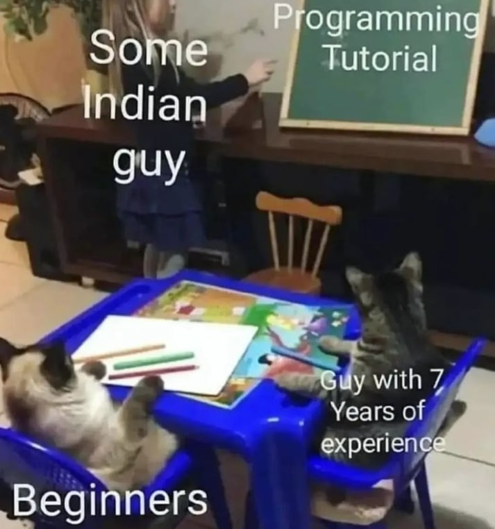

With my logical thinking, studying IT made a lot of sense considering future employability. I never wanted to be stuck in a boring desk job, a specific industry like medicine or frustrating customer service. The tech industry has always seemed a very young, innovative and productive space which was very appealing to me. I do not have any specific job or position in mind as a goal but I am more focused on developing my skills to a high level and adaptability so when the time comes to find a job I have the flexibility to choose. Computing skills are applicable in any industry and are currently in high demand so I believe I have high prospects in the future.
Future
Looking forward.
Computing in Career Options
Computing in My Personal Life
I had always been interested in computers since I was young and have grown up spending hours interacting with technology. Studying computing would not have been such a surprise to anyone. The knowledge and skills I expect to gain from studying Information Technology at UTS plus the work experience during studies should provide me with support when pursuing hobbies and interests. The skills would allow me to see technology and software in a different light and allow new ideas.
I enjoy indie games such as Moonlighter and want to try indie game development in the future for fun and studying IT will definitely help me in this endevour.
Future Studies
Due to studying a double degree with business, I was unable to study Interaction Design and Networking and Cybersecurity. Having to choose only one - Networking and Cybersecurity for the reasoning that it would be harder to teach myself. I hope to be able to pursue aspects of Interaction Design in my studies in the future, whether it be in honours or another avenue. I believe having skills in the technical areas of Networking and Cybersecurity combined with the communication and UI/UX design skills of Interaction Design create a great opportunity for differentiation in the current skills market - for example, many interfaces used in the field of cybersecurity are not user friendly, so it is definitely something I am interested in pursuing.